CloneBlock-RT / Native module study / R1
Inside nine voice cloners.
Architecture maps and local module-sensitivity measurements. These are fixed R1 implementations, not claims about every version of each model.
We change one continuous boundary at a time, using a relative activation norm of 0.10. Two random directions × both signs × two generation seeds give eight planned units per site. Same-seed clean repeats and zero-change controls come first. Integer token IDs are never directly modified by floating-point noise.
D measures output embedding movement. A measures the drop in similarity to an independent real target recording: positive means less similar, negative means more similar. ECAPA and Resemblyzer remain separate.
本页完整展示9份架构、8个有实际探针数据的模型。固定一人一句、单一强度，不是模块贡献百分比，也没有人耳或MOS评价。缺失结果保持未知；内部干预不等于真实保护WAV成功。图表横线为观察范围，不是置信区间。
53 planned sites / 47 probed sites · 376 actual generations · 327 of 328 executed probes automatically eligible. 424 perturbation units were planned. Groups A, B and C have different dose structures and must not become a single contribution ranking.
reference-conditioned TTS / R1 fixed implementation
F5-TTS
The joint DiT input was more sensitive than the DiT backbone output within the repeated-boundary group; both were injected 32 times.
46/46 generated · 40/40 automatically eligible probes · Report pp. 8–10.
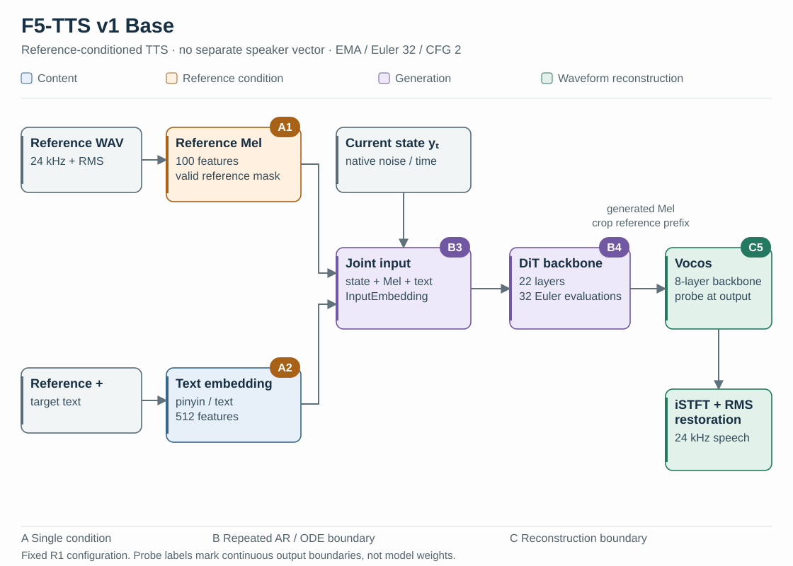
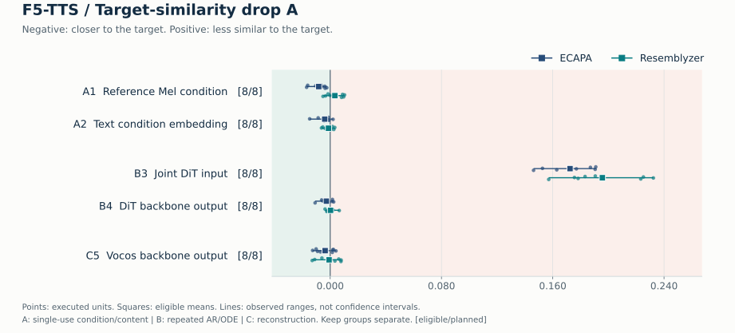
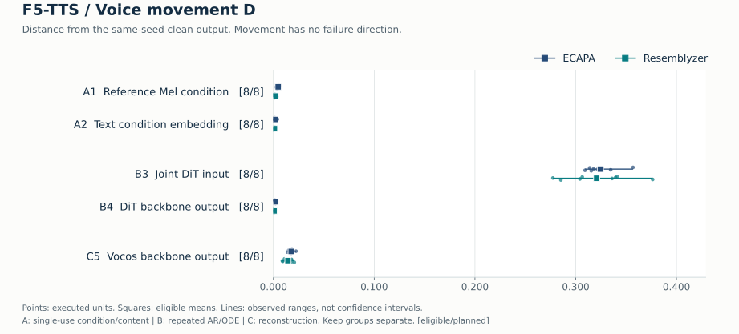
Single reference/text boundaries and repeated DiT boundaries are different intervention groups.
| Site / module | Eligible / planned | Calls / unit | D · ECAPA / R | A · ECAPA / R |
|---|---|---|---|---|
A1Reference Mel condition | 8/8 | 1 | 0.00475 0.00192 | -0.00826 0.00338 |
A2Text condition embedding | 8/8 | 1 | 0.00152 0.00099 | -0.00393 -0.00121 |
B3Joint DiT input | 8/8 | 32 | 0.32447 0.32083 | 0.17240 0.19569 |
B4DiT backbone output | 8/8 | 32 | 0.00189 0.00063 | -0.00272 0.00026 |
C5Vocos backbone output | 8/8 | 1 | 0.01762 0.01443 | -0.00362 -0.00082 |
reference-conditioned TTS / R1 fixed implementation
Qwen3-TTS
Speaker, reference codec and text conditions all moved the output embedding. Yet 28 of 48 probes made it closer to the target under both encoders.
54/54 generated · 48/48 automatically eligible probes · Report pp. 11–13.
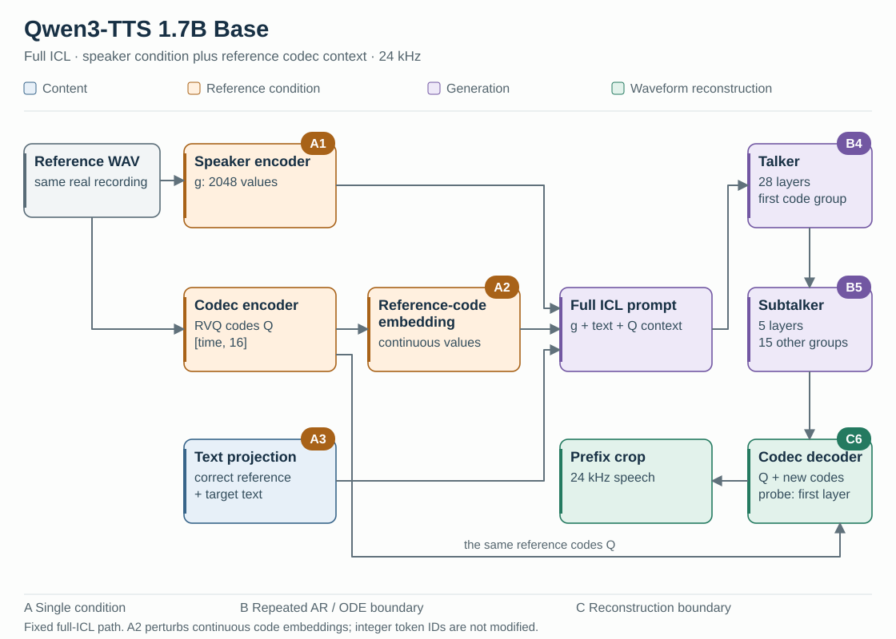
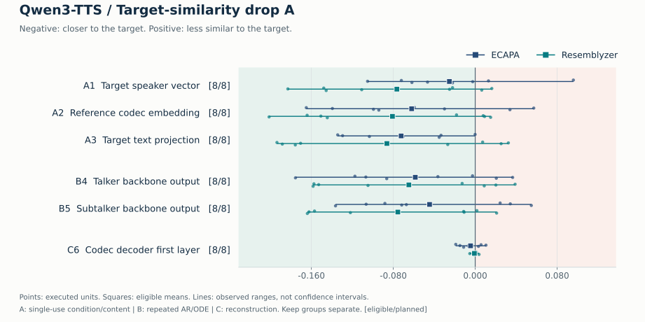
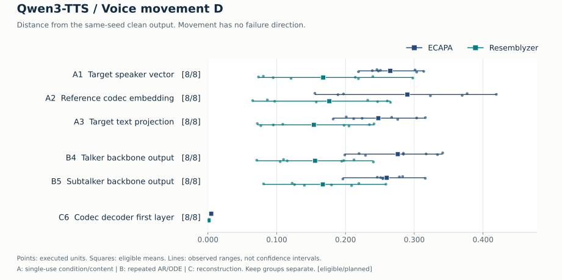
Talker and Subtalker receive different numbers of injections; movement is not identity loss.
| Site / module | Eligible / planned | Calls / unit | D · ECAPA / R | A · ECAPA / R |
|---|---|---|---|---|
A1Target speaker vector | 8/8 | 1 | 0.26509 0.16757 | -0.02519 -0.07650 |
A2Reference codec embedding | 8/8 | 1 | 0.28994 0.17641 | -0.06206 -0.08087 |
A3Target text projection | 8/8 | 1 | 0.24774 0.15399 | -0.07231 -0.08627 |
B4Talker backbone output | 8/8 | 36–53 | 0.27604 0.15577 | -0.05853 -0.06478 |
B5Subtalker backbone output | 8/8 | 540–690 | 0.26000 0.16704 | -0.04461 -0.07559 |
C6Codec decoder first layer | 8/8 | 1 | 0.00476 0.00088 | -0.00453 -0.00085 |
VC / R1 fixed implementation
OpenVoice
The source posterior latent also moved the output embedding; output-embedding changes were not confined to the target timbre vector.
54/54 generated · 48/48 automatically eligible probes · Report pp. 14–16.
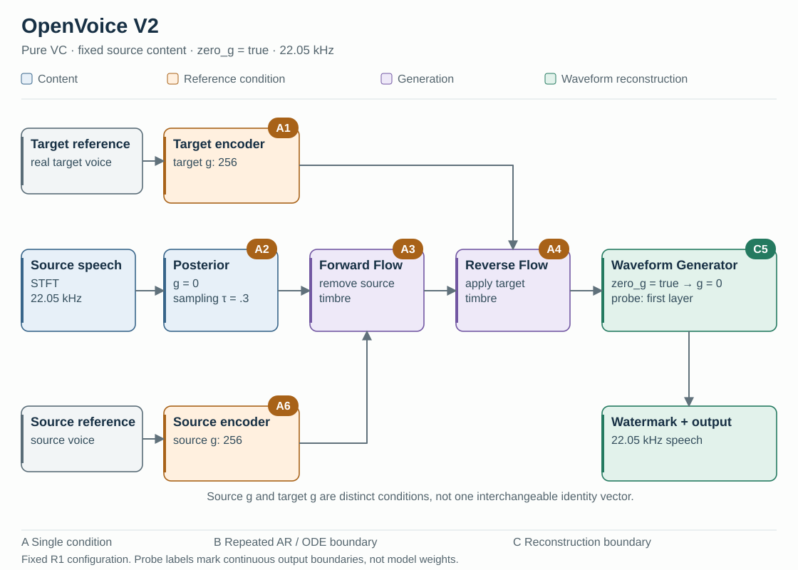
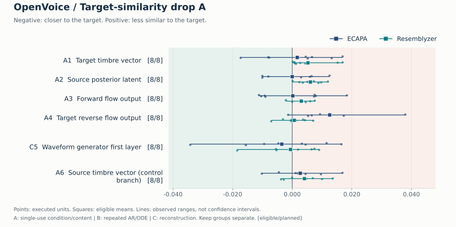
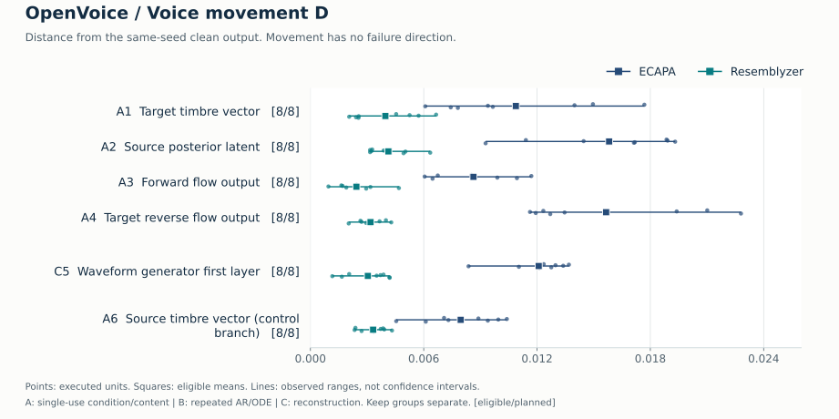
The two encoders disagreed on the direction of target-similarity change in 24 of 48 probes.
| Site / module | Eligible / planned | Calls / unit | D · ECAPA / R | A · ECAPA / R |
|---|---|---|---|---|
A1Target timbre vector | 8/8 | 1 | 0.01088 0.00397 | 0.00168 0.00528 |
A2Source posterior latent | 8/8 | 1 | 0.01582 0.00413 | -0.00000 0.00611 |
A3Forward flow output | 8/8 | 1 | 0.00864 0.00243 | 0.00017 0.00306 |
A4Target reverse flow output | 8/8 | 1 | 0.01566 0.00318 | 0.01256 0.00067 |
C5Waveform generator first layer | 8/8 | 1 | 0.01209 0.00304 | -0.00351 -0.00056 |
A6Source timbre vector (control branch) | 8/8 | 1 | 0.00796 0.00332 | 0.00270 0.00409 |
reference-conditioned TTS / R1 fixed implementation
CosyVoice 3
Generated Mel and HiFT boundaries reduced mean target similarity under both encoders.
54/54 generated · 48/48 automatically eligible probes · Report pp. 17–19.
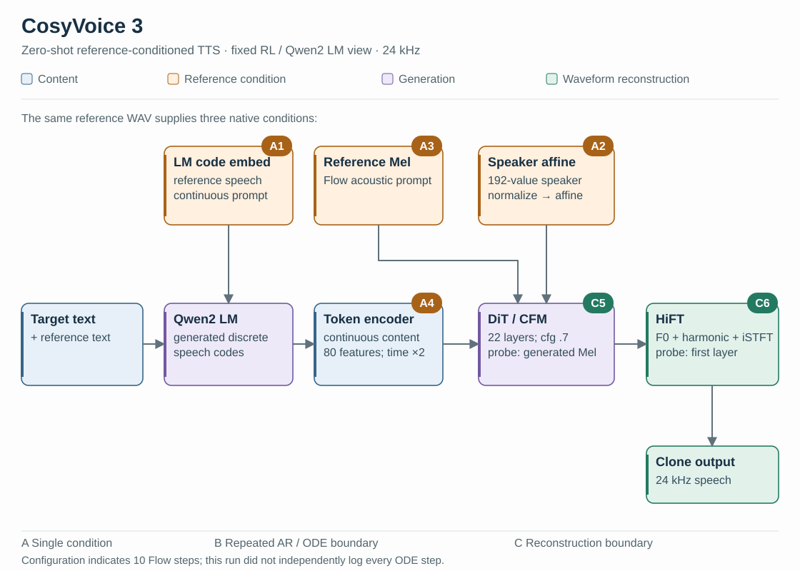
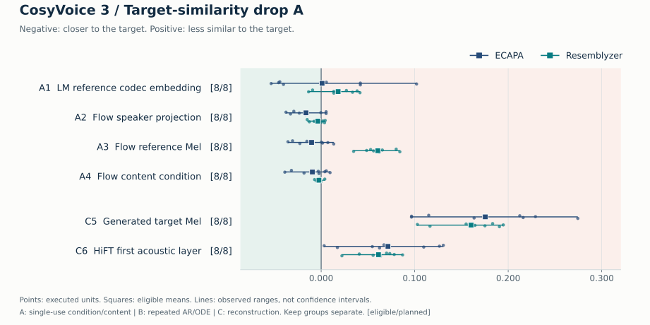
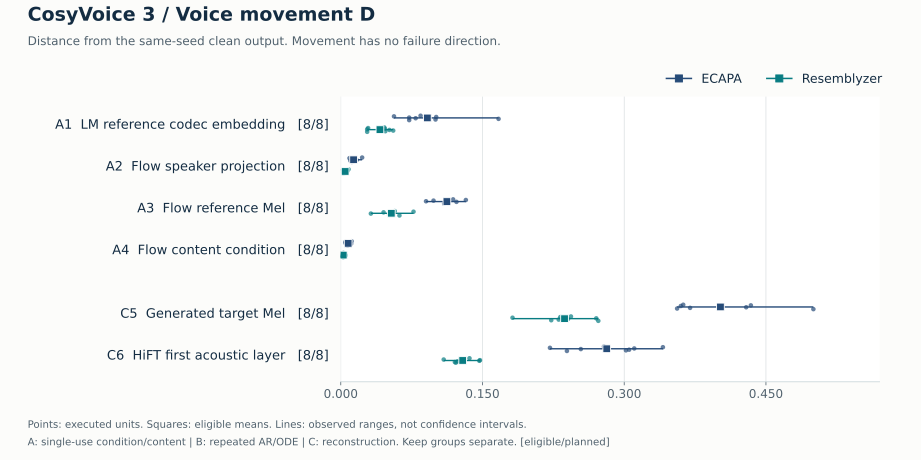
Reconstruction sensitivity can include distortion; the reference-Mel mean A had opposite signs across encoders.
| Site / module | Eligible / planned | Calls / unit | D · ECAPA / R | A · ECAPA / R |
|---|---|---|---|---|
A1LM reference codec embedding | 8/8 | 1 | 0.09164 0.04146 | 0.00098 0.01813 |
A2Flow speaker projection | 8/8 | 1 | 0.01355 0.00466 | -0.01620 -0.00358 |
A3Flow reference Mel | 8/8 | 1 | 0.11232 0.05349 | -0.01022 0.06054 |
A4Flow content condition | 8/8 | 1 | 0.00784 0.00264 | -0.00942 -0.00236 |
C5Generated target Mel | 8/8 | 1 | 0.40184 0.23684 | 0.17547 0.16033 |
C6HiFT first acoustic layer | 8/8 | 1 | 0.28150 0.12904 | 0.07146 0.06130 |
reference-conditioned TTS / R1 fixed implementation
Chatterbox Turbo
Generated Mel and HiFT boundaries moved the output; all eight reference-Mel probes had opposite A signs across encoders.
54/54 generated · 48/48 automatically eligible probes · Report pp. 20–22.
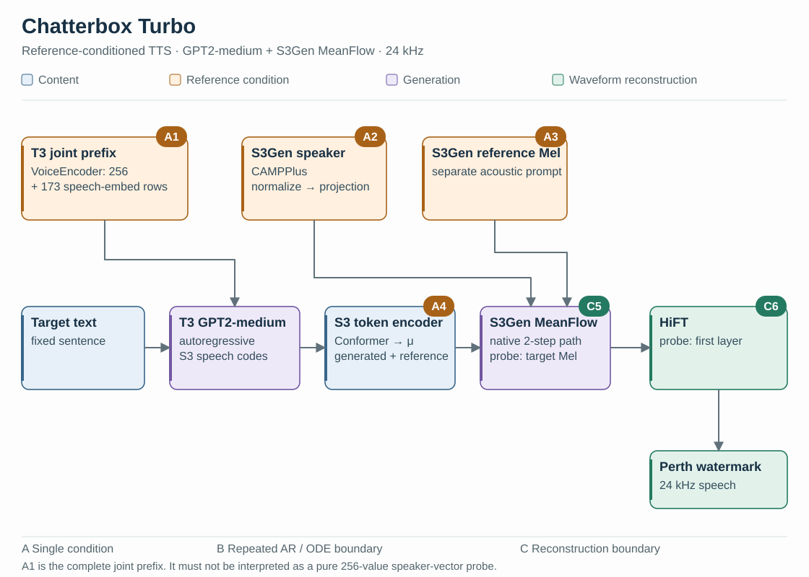
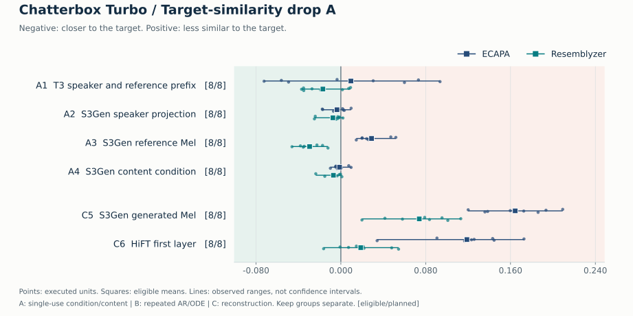
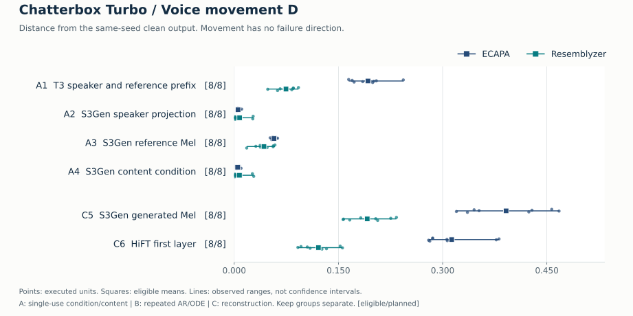
The T3 prefix combines speaker and reference-speech embeddings rather than isolating a speaker vector.
| Site / module | Eligible / planned | Calls / unit | D · ECAPA / R | A · ECAPA / R |
|---|---|---|---|---|
A1T3 speaker and reference prefix | 8/8 | 1 | 0.19252 0.07451 | 0.00948 -0.01691 |
A2S3Gen speaker projection | 8/8 | 1 | 0.00553 0.00776 | -0.00365 -0.00753 |
A3S3Gen reference Mel | 8/8 | 1 | 0.05728 0.04280 | 0.02894 -0.02947 |
A4S3Gen content condition | 8/8 | 1 | 0.00489 0.00757 | -0.00121 -0.00702 |
C5S3Gen generated Mel | 8/8 | 1 | 0.39134 0.19145 | 0.16440 0.07395 |
C6HiFT first layer | 8/8 | 1 | 0.31300 0.12120 | 0.11885 0.01878 |
VC / R1 fixed implementation
Seed-VC
Within the single-use condition group, reference Mel was the clearest consistent result: all eight probes reduced target similarity under both encoders.
54/54 generated · 47/48 automatically eligible probes · Report pp. 23–25.
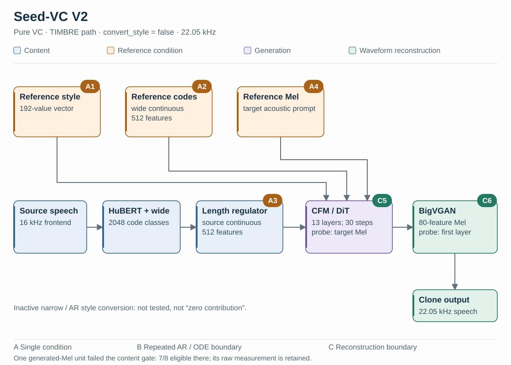
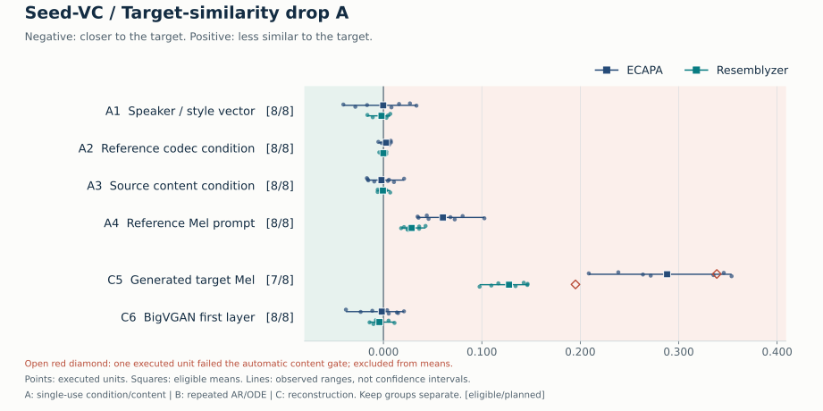
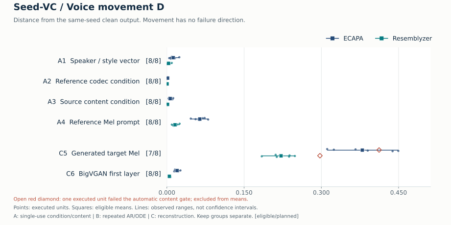
One generated-Mel probe failed the content gate; inactive style-conversion branches were not tested.
| Site / module | Eligible / planned | Calls / unit | D · ECAPA / R | A · ECAPA / R |
|---|---|---|---|---|
A1Speaker / style vector | 8/8 | 1 | 0.01229 0.00334 | -0.00020 -0.00195 |
A2Reference codec condition | 8/8 | 1 | 0.00139 0.00041 | 0.00267 -0.00006 |
A3Source content condition | 8/8 | 1 | 0.00660 0.00131 | -0.00197 -0.00055 |
A4Reference Mel prompt | 8/8 | 1 | 0.06395 0.01581 | 0.06048 0.02870 |
C5Generated target Mel | 7/8 | 1 | 0.37962 0.22181 | 0.28821 0.12766 |
C6BigVGAN first layer | 8/8 | 1 | 0.01980 0.00489 | -0.00175 -0.00405 |
reference-conditioned TTS / R1 fixed implementation
VoxCPM2
Reference latents, semantic/residual LM projections and local DiT responses were probed on the second seed only.
30/54 generated · 24/48 automatically eligible probes · Report pp. 26–28.
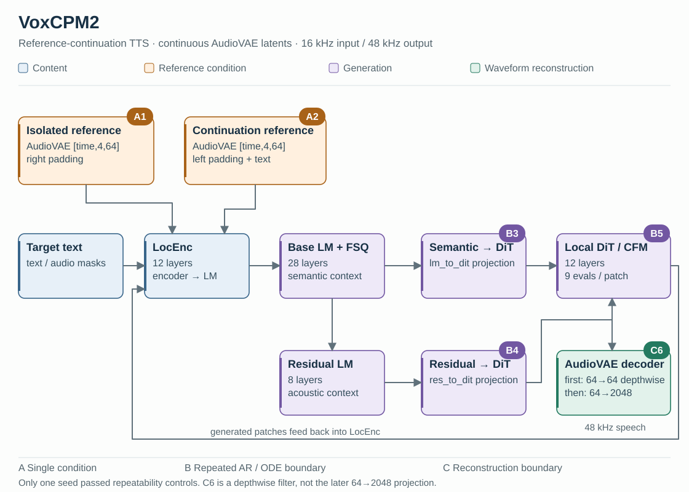
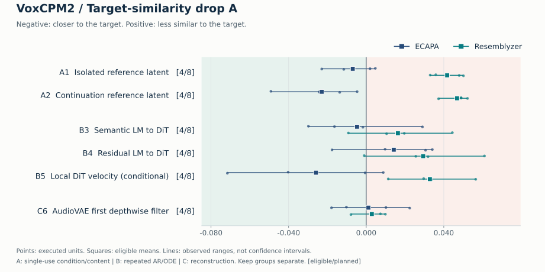
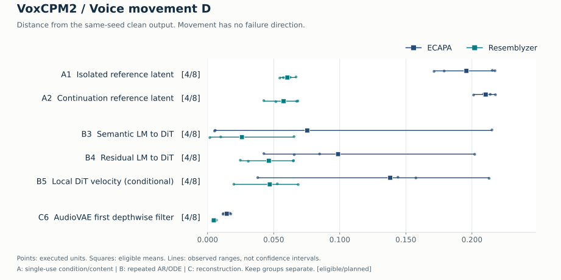
The first seed failed CLEAN repeatability; 24 probes were blocked, and 16 of 24 observed probes had opposite A signs.
| Site / module | Eligible / planned | Calls / unit | D · ECAPA / R | A · ECAPA / R |
|---|---|---|---|---|
A1Isolated reference latent | 4/8 | 1 | 0.19578 0.06037 | -0.00695 0.04173 |
A2Continuation reference latent | 4/8 | 1 | 0.21040 0.05748 | -0.02294 0.04685 |
B3Semantic LM to DiT | 4/8 | 26–29 | 0.07540 0.02598 | -0.00472 0.01634 |
B4Residual LM to DiT | 4/8 | 27–29 | 0.09872 0.04634 | 0.01420 0.02935 |
B5Local DiT velocity (conditional) | 4/8 | 225–261 | 0.13813 0.04706 | -0.02590 0.03282 |
C6AudioVAE first depthwise filter | 4/8 | 1 | 0.01449 0.00471 | 0.00113 0.00288 |
reference-conditioned TTS / R1 fixed implementation
Fish Speech S2
Reference-code and language-model boundaries moved the output embedding on the second seed.
30/54 generated · 24/48 automatically eligible probes · Report pp. 29–31.
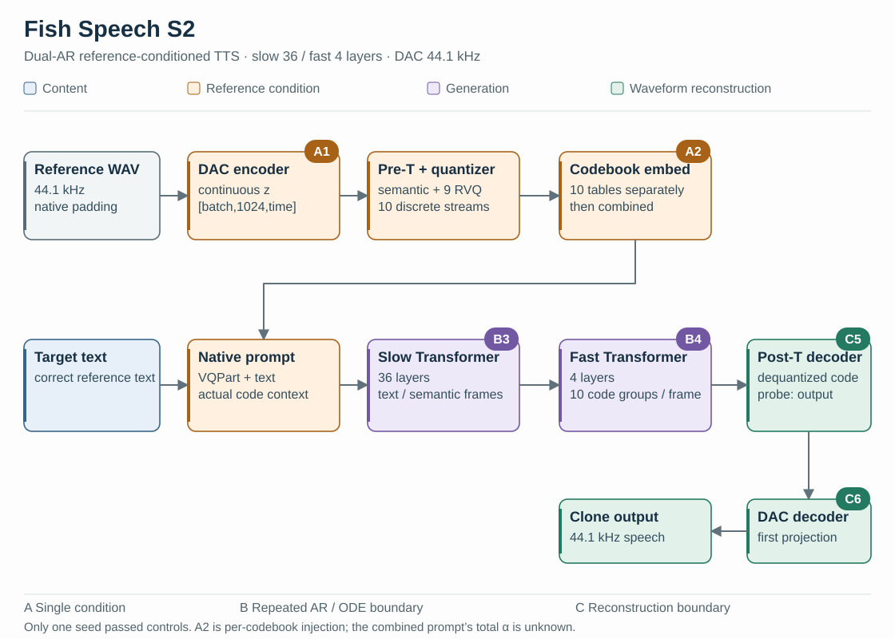
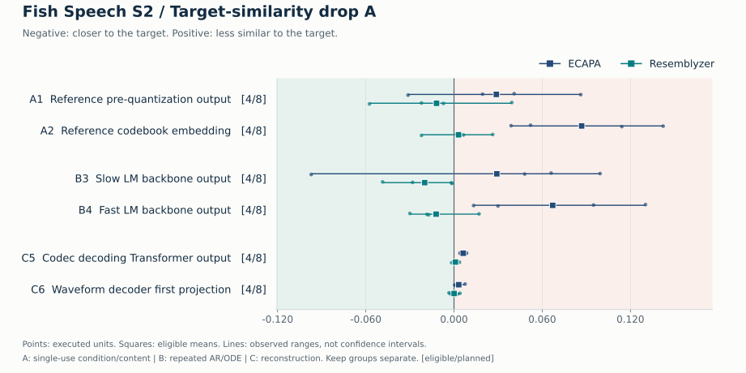
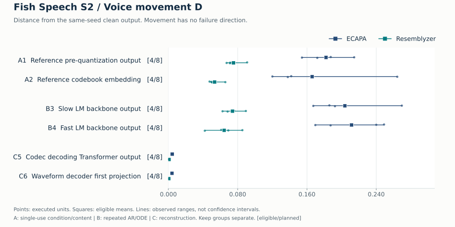
The first seed failed CLEAN repeatability; 12 of 24 observed probes had opposite A signs. Some Fast LM hook returns were not used for sampling.
| Site / module | Eligible / planned | Calls / unit | D · ECAPA / R | A · ECAPA / R |
|---|---|---|---|---|
A1Reference pre-quantization output | 4/8 | 1 | 0.18205 0.07518 | 0.02882 -0.01187 |
A2Reference codebook embedding | 4/8 | 10 | 0.16602 0.05338 | 0.08681 0.00308 |
B3Slow LM backbone output | 4/8 | 54–59 | 0.20378 0.07408 | 0.02909 -0.01997 |
B4Fast LM backbone output | 4/8 | 530–550 | 0.21151 0.06446 | 0.06711 -0.01215 |
C5Codec decoding Transformer output | 4/8 | 1 | 0.00447 0.00080 | 0.00627 0.00093 |
C6Waveform decoder first projection | 4/8 | 1 | 0.00418 0.00057 | 0.00322 0.00009 |
VC / R1 fixed implementation
FreeVC
Its source architecture was mapped, but loading failed and no module effect was measured.
0/54 generated · 0/48 automatically eligible probes · Report pp. 32–33.
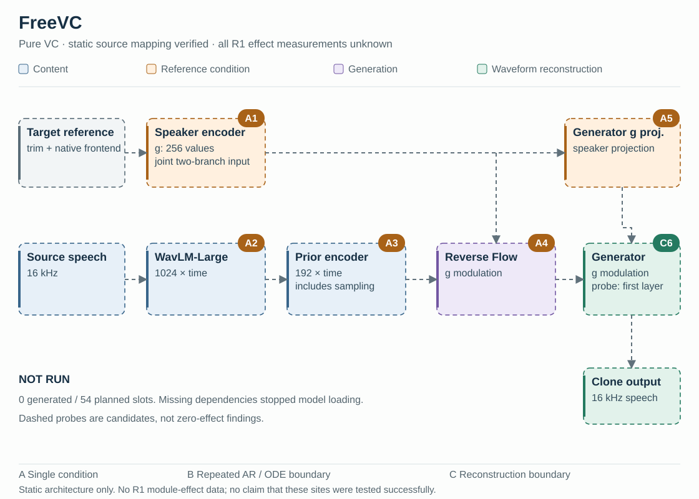
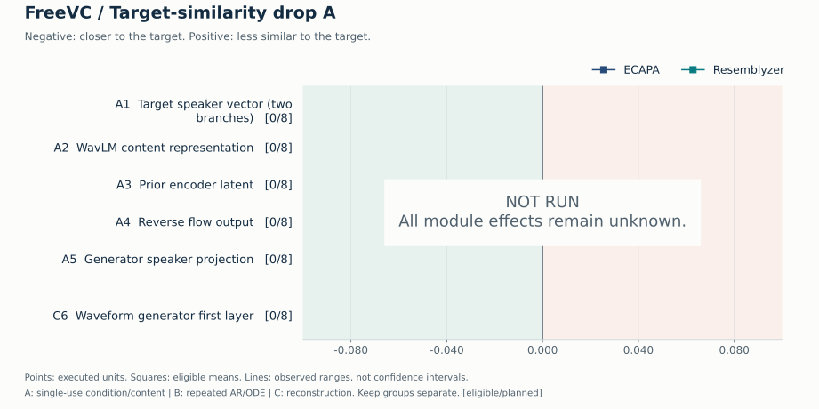
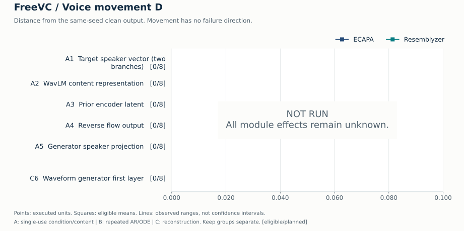
No successful generation: all six module results are unknown, not zero.
| Site / module | Eligible / planned | Calls / unit | D · ECAPA / R | A · ECAPA / R |
|---|---|---|---|---|
A1Target speaker vector (two branches) | 0/8 | Unknown | Unknown Unknown | Unknown Unknown |
A2WavLM content representation | 0/8 | Unknown | Unknown Unknown | Unknown Unknown |
A3Prior encoder latent | 0/8 | Unknown | Unknown Unknown | Unknown Unknown |
A4Reverse flow output | 0/8 | Unknown | Unknown Unknown | Unknown Unknown |
A5Generator speaker projection | 0/8 | Unknown | Unknown Unknown | Unknown Unknown |
C6Waveform generator first layer | 0/8 | Unknown | Unknown Unknown | Unknown Unknown |